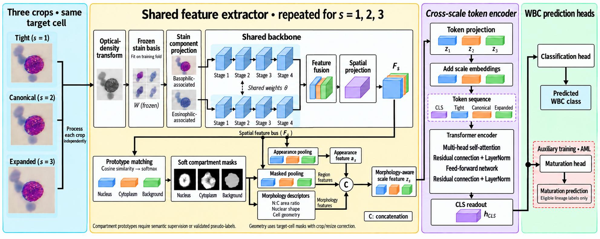
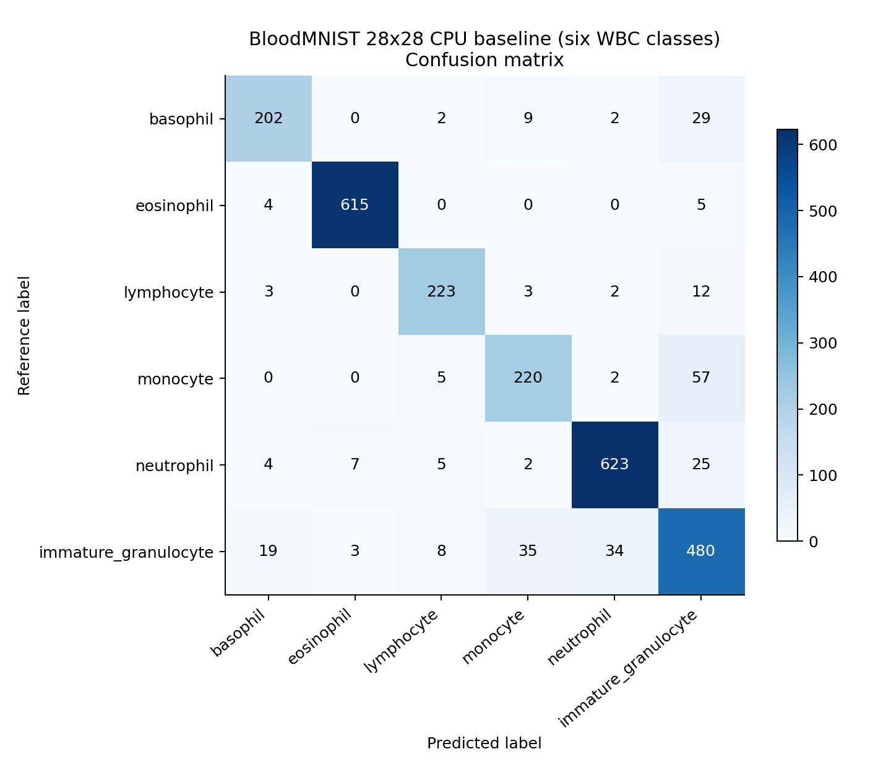

Stain · Morphology · Multiple scales
White blood cell classification, with a traceable research pipeline.
A PyTorch implementation connecting stain-associated representations, compartment features and scale attention—with the code to train, validate, test and examine the results.
Research status. This is a new reference implementation of the supplied proposed method. The manuscript's reported scores have unverified experimental provenance. Full original-dataset reproduction remains outstanding; executed demonstrations below are identified separately.
One complete experimental workflow
Prepare and partition
Native and common-five label spaces, dataset audits, decoded-image hashes, verified group links and fixed source-only partitions.
Train the representation
Shared ConvNeXt-T streams, compartment prototypes, explicit morphology, crop-scale attention and restricted maturation supervision.
Test the evidence
Case-level predictions, calibration, paired group statistics, mask agreement, deterministic corruptions and measured inference timing.

Results actually executed
A separate CPU baseline
Logistic regression on spatial and color features from six WBC classes in 28×28 BloodMNIST, derived from PBC. Validation selects regularization and temperature. Exact duplicates crossing the fixed partitions are excluded.
These are not results of the proposed full model or the original-resolution manuscript experiment. Patient/slide independence remains unverified.
Inspect predictions, coefficients and provenance →
A reduced-encoder integration run also exercises stain fitting, training, checkpoint selection, calibration and testing. Full ConvNeXt-T tensor flow, five comparator adapters, and all 11 standalone RGB classifiers are covered by automated tests.
Version 0.2: standalone Compact CNN, ResNet, DenseNet, MobileNet, EfficientNet, ConvNeXt, Swin and ViT models; resumable training; frozen-encoder fine-tuning; probability ensembles; and batch prediction/feature export. See the model and training guide and two-model RGB integration outputs. These short, small-subset runs check software behavior, not benchmark performance.
Start with the runnable demonstration
pip install -e ".[dev]"
wbc download --demo --out data/bloodmnist.npz
python scripts/demo_baseline.py --data data/bloodmnist.npz --out runs/demo
pytest -qFor original cohort experiments, follow the dataset guide, verify group metadata, and use the native or leave-one-dataset-out configurations. Full training requires substantial compute.